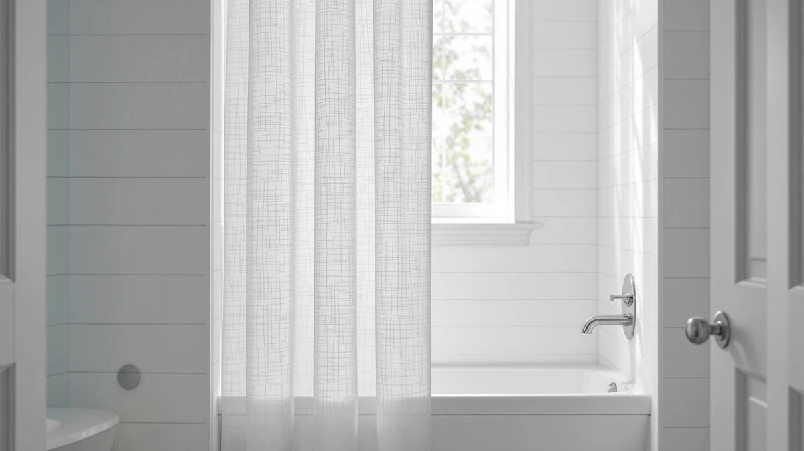

The Best Shower Curtain Liners For small bathrooms (2026)
Prices and picks verified as of September 2026. Independent, reader-supported reviews.


Quick Answer
The ALYVIA SPRING Waterproof Fabric Shower Curtain is the best pick among the shower curtain liners for small bathrooms we compared, because its lightweight waterproof fabric works as a stand-alone liner and curtain in one panel, saving the extra inches a separate liner takes up in a cramped stall. At $8.99, with a 4.6-star average across 45,457 reviews, it carries the deepest review history in this lineup. If you want a hookless design or extra weight to stop billowing in a tight shower, the picks below cover those needs too.
Our pick: ALYVIA SPRING Waterproof Fabric Shower — $8.99 Check Price on Amazon
Bottom line: our top pick is the ALYVIA SPRING Waterproof Fabric Shower Curtain Soft Hotel at $8.99. The best budget option is the Aiyufeng Moga Navy Blue Fabric Shower Curtains for Bathroom - at $7.64.
Things to Know Before You Buy
- Only the top pick has an established review history. The ALYVIA SPRING Waterproof Fabric Shower Curtain carries a 4.6-star average across 45,457 reviews, by far the deepest evidence base in this lineup. The other six picks are newer listings we compared on stated material, size, and price instead.
- Sizes run from 71 by 74 inches down to 72 by 72 inches. The SORTTO No Hook Shower Curtain is the only pick that isn't the standard 72 by 72 inch size, so measure your rod before ordering.
- A waterproof panel can replace a separate liner in a tight stall. The ALYVIA and Aiyufeng picks are both Polyester and PEVA, water-resistant enough to hang alone, while the TUDECO lace curtain is sheer and needs a liner behind it. See our fabric liner picks for more single-panel options.
- Price spans $8.49 to $25.99 across these seven picks. The Aiyufeng navy panel is the least expensive, and the TUDECO lace curtain is the most expensive because of its decorative construction, not a functional difference.
- Curtain weights fix billowing in a cramped shower. The 8 Pack Shower Curtain Weights included here clip onto the hem of any liner or curtain to stop it from clinging inward, a common problem once a stall gets narrow enough for airflow to catch a lightweight panel. If mildew from a humid, poorly ventilated small bathroom is your bigger concern, see our mildew-resistant picks.
The best shower curtain liners for small bathrooms have to do double duty: block water the way any liner does, while taking up as little of your tight stall or tub alcove as possible. A separate plastic liner behind a decorative curtain works fine in a spacious bathroom, but in a cramped stall those two overlapping panels brush against your legs and crowd a rod that barely has room for one. We compared seven picks built for exactly that problem, from a waterproof single-panel liner to an accessory that stops any liner from billowing inward.
The ALYVIA SPRING Waterproof Fabric Shower Curtain leads this guide at $8.99, and it's the only pick with a deep review history behind it: a 4.6-star average across 45,457 verified reviews. Its Polyester and PEVA build sheds water well enough to hang alone, which means a small bathroom shower needs only one panel instead of two. The SORTTO No Hook Shower Curtain and the three patterned picks below round out this lineup for buyers who want a hookless design or more visual detail than a plain liner offers.
Because small-bathroom shoppers often need more than a single fabric panel, we also included the 8 Pack Shower Curtain Weights, an accessory that clips onto the hem of any liner here and stops it from clinging inward in a tight, drafty stall. Below, we break down what each pick is actually good for, the material and size behind it, and the honest drawbacks worth knowing before you order.
Why You Should Trust Us
I'm Ilane Tall, and I cover bath and shower gear for Best Shower Curtains. For this guide to the best shower curtain liners for small bathrooms, I focused on the details that matter most once space is tight: whether a panel can double as a liner on its own, the exact size listed, and what verified buyers report once a curtain has been through repeated washes in a small, humid bathroom.
We do not own or install every product we cover. Instead we research each listing closely, cross-check material and size claims against the manufacturer's own description, and weigh star ratings against review volume, since a strong average on a handful of reviews tells you far less than the same average built on tens of thousands. Every price, material, and rating in this guide comes from the current Amazon listing.
How We Picked
We started with a wide list of candidates for the best shower curtain liners for small bathrooms, then narrowed the field to picks that state their material and size clearly, since a liner listing without that information is impossible to verify against a tight stall or tub. We prioritized panels built from water-resistant Polyester and PEVA blends that can function as a stand-alone liner, then rounded out the guide with decorative curtains and the hem-weight accessory that buyers in small bathrooms search for alongside a liner.
We excluded listings that didn't specify a size or material, and we weighed review count against rating throughout, since a handful of five-star reviews carries far less weight than the tens of thousands behind our top pick.
How We Compared
We compared each of the best shower curtain liners for small bathrooms in this guide on the same facts: listed material, panel size, current price, and star rating and review count where the listing provides them, all pulled directly from the live Amazon listing rather than promotional copy. Where a listing described a panel as waterproof, we checked that against its stated material rather than the title alone.
We also weighed review count against rating. The ALYVIA pick carries a 4.6-star average across 45,457 reviews, giving it the deepest evidence base in this guide, while the other six picks are newer listings we compared primarily on price, stated size, and material rather than an established review history.
Our Picks

ALYVIA SPRING Waterproof Fabric Shower
What we like
- The deepest review history in this lineup, a 4.6-star average across 45,457 reviews
- Polyester and PEVA build sheds water like a liner, so it can hang alone in a compact shower without a second panel behind it
- At $8.99 it's one of the least expensive picks here
Flaws but not dealbreakers
- The standard 72 by 72 inch size won't extend a stall that already sits short on clearance
- A liner-and-curtain hybrid like this trades some of the drape a true fabric curtain gives you
| Material | Polyester / PEVA |
| Size | 72x72 |
The ALYVIA SPRING Waterproof Fabric Shower Curtain is the best shower curtain liner for small bathrooms in this lineup because it lets you skip the second panel altogether. Its Polyester and PEVA construction sheds water the way a dedicated liner does, so a stall shower that has room for exactly one curtain rod gets full coverage without doubling up. That single-panel approach is the detail that matters most once your bathroom is tight enough that even a few extra inches of overlapping fabric brush against your legs.
At $8.99, it's also one of the cheapest picks in this guide, and its 4.6-star average across 45,457 verified reviews gives it far more evidence behind it than any other product here. Reviewers consistently note that the fabric holds up through repeated washing without curling at the edges, a common complaint with thinner PEVA-only liners. The 72 by 72 inch size fits a standard tub or stall, though it won't help if your shower opening runs longer than that.

SORTTO No Hook Shower Curtain
What we like
- The no-hook design removes the rings that can catch on a narrow stall's walls or glass edge
- At 71 by 74 inches it runs slightly taller than the standard 72 by 72 inch size, useful for a shower with a higher rod
- Polyester and PEVA construction matches the water resistance of the picks around it
Flaws but not dealbreakers
- This is a newer listing without the review history the ALYVIA pick has built up
- At $17.99 it costs twice as much as the cheapest curtain in this lineup
| Material | Polyester / PEVA |
| Size | 71"W x 74"L (Pack of 1) |
The SORTTO No Hook Shower Curtain removes an entire category of small-bathroom annoyance: curtain rings that snag on a narrow stall wall or a glass shower door when you don't have room to maneuver. Instead of loops or rings, the panel attaches directly to the rod, which also means one less part to lose or replace over the life of the curtain.
Sized 71 inches wide by 74 inches long, it runs a couple of inches taller than the standard 72 by 72 inch size, which helps if your rod sits higher than average. At $17.99, it costs more than the ALYVIA pick above, and it is a newer listing that hasn't built up the review volume that pick has, so we compared it mainly on its hookless design and stated size rather than an established rating.

TUDECO White Lace Shower Curtain
What we like
- The lace pattern adds a decorative layer that a plain PEVA liner can't match
- Standard 72 by 72 inch size fits most stalls and tubs without alteration
- Works as the visible outer layer over a plain waterproof liner, keeping the liner itself out of sight
Flaws but not dealbreakers
- At $25.99 it's the most expensive pick in this guide
- A lace panel is sheer by design, so it needs a solid liner behind it rather than standing in as your only barrier against splashing
| Material | Polyester / PEVA |
| Size | 72"W x 72"L (Pack of 1) |
The TUDECO White Lace Shower Curtain covers a different need than the panels above it: it's a decorative outer layer, not a stand-alone liner. Its lace pattern is sheer by construction, which means it can't do the splash-blocking job the ALYVIA and SORTTO panels handle on their own. In a small bathroom, that combination, a plain liner behind a decorative outer curtain, still takes up more rod space than a single hybrid panel, so it makes the most sense when you specifically want the lace look.
At $25.99, it's priced well above the other curtains in this lineup because it's decorative rather than a straightforward waterproof liner. The standard 72 by 72 inch size fits most tubs and stalls without trimming. If your priority is saving space rather than style, the ALYVIA pick above does more of the practical work in less rod room.

Stratford Park Payton Pom Pom
What we like
- Pom pom trim adds texture that a plain liner doesn't offer
- Standard 72 by 72 inch size fits most small bathroom stalls and tubs
- At $17.09 it costs less than the lace pick above, while still offering a decorative detail
Flaws but not dealbreakers
- Like the lace curtain, the trim detail means this works best layered over a liner rather than alone
- This is a newer listing without an established review count yet
| Material | Polyester / PEVA |
| Size | 72"W x 72"L (Pack of 1) |
The Stratford Park Payton Pom Pom curtain sits between the purely functional liners and the lace pick in both price and purpose. Its pom pom trim gives it more visual detail than a plain Polyester and PEVA panel, without pushing the price as high as the TUDECO lace curtain above.
At $17.09 and sized 72 by 72 inches, it fits the same standard stalls and tubs as most of the picks in this guide. Because the trim sits along the hem rather than through the whole panel, it holds up to the same water exposure as a plain curtain, though we'd still pair it with a liner behind it if your priority is keeping water fully contained in a tight shower.

BTTN Boho Farmhouse Shower Curtain
What we like
- The farmhouse print gives a small bathroom a decorative focal point that a plain liner can't
- Standard 72 by 72 inch size matches the fit of most picks in this guide
- Polyester and PEVA construction keeps the same water resistance as the plainer curtains
Flaws but not dealbreakers
- At $23.99 it's among the pricier picks in this lineup
- This is a newer listing without the review volume the ALYVIA pick has
| Material | Polyester / PEVA |
| Size | 72"W x 72"L (Pack of 1) |
The BTTN Boho Farmhouse Shower Curtain trades some of the practicality above for pattern. Its farmhouse print works as the visible layer in a small bathroom where the shower curtain doubles as one of the only large decorative surfaces in the room.
At $23.99, sized 72 by 72 inches, it fits the same stalls and tubs as the other standard-size picks here. We compared it on its stated material and size rather than an established rating, since it's a newer listing, and the Polyester and PEVA build gives it the same water resistance as the plainer curtains in this guide.

Aiyufeng Moga Navy Blue Fabric
What we like
- At $8.49 it's the least expensive pick in this guide, half a dollar below the ALYVIA pick
- Standard 72 by 72 inch size fits most small bathroom stalls and tubs
- A solid navy color works as a simple background layer without competing with other bathroom decor
Flaws but not dealbreakers
- This is a newer listing without the review history the ALYVIA pick has built
- A solid color panel doesn't add the decorative detail the lace, pom pom, or farmhouse picks above offer
| Material | Polyester / PEVA |
| Size | 72"W x 72"L (Pack of 1) |
The Aiyufeng Moga Navy Blue Fabric curtain is the cheapest pick in this guide at $8.49, edging out even the ALYVIA pick by half a dollar. Where the ALYVIA panel doubles as a functional liner, this one leans toward a simple solid-color curtain, which still keeps the price low for anyone furnishing a small bathroom on a tight budget.
Sized 72 by 72 inches, it fits the same standard stalls and tubs as most picks here, and its Polyester and PEVA construction matches the water resistance of the other curtains in this lineup. We compared it mainly on price and stated material, since it's a newer listing without an established review count yet.

8 Pack Shower Curtain Weights
What we like
- Eight weights in the pack, enough to cover the hem of a full 72 inch wide panel
- At $9.99 it's an inexpensive add-on to any of the curtains above
- Clips onto an existing hem instead of requiring a full curtain replacement
Flaws but not dealbreakers
- This is an accessory, not a liner on its own, so it needs pairing with one of the curtains above
- This is a newer listing without an established review count yet
| Material | Polyester / PEVA |
| Size | 1.2"W x 1.6"L (Pack of 8) |
The 8 Pack Shower Curtain Weights aren't a liner or a curtain, they're the accessory that makes a lightweight liner behave in a small bathroom. In a cramped stall, a billowing curtain or liner brushes against your legs with every draft from the vent or the water itself, and eight small weights clipped along the hem correct that without replacing the panel.
At $9.99 for a pack of eight, sized 1.2 by 1.6 inches each, they're a low-cost way to fix a floating hem on any of the curtains covered in this guide, including the ALYVIA pick above. We compared this pick on price and stated pack count rather than an established rating, since it's a newer listing.
Quick Comparison
| Product | Material | Price | Rating | Best for | Get it |
|---|---|---|---|---|---|
| ALYVIA SPRING Waterproof Fabric Shower | Polyester / PEVA | $8.99 | 4.6 | One-panel liner and curtain combo | View on Amazon → |
| SORTTO No Hook Shower Curtain | Polyester / PEVA | $17.99 | 4 | Hookless design for tight stall showers | View on Amazon → |
| TUDECO White Lace Shower Curtain | Polyester / PEVA | $25.99 | 4 | Decorative outer layer over a liner | View on Amazon → |
| Stratford Park Payton Pom Pom | Polyester / PEVA | $17.09 | 4 | Trimmed detail at a mid-range price | View on Amazon → |
| BTTN Boho Farmhouse Shower Curtain | Polyester / PEVA | $23.99 | 4 | Patterned farmhouse print, standard fit | View on Amazon → |
| Aiyufeng Moga Navy Blue Fabric | Polyester / PEVA | $8.49 | 4 | Lowest price, solid navy color | View on Amazon → |
| 8 Pack Shower Curtain Weights | Polyester / PEVA | $9.99 | 4 | Accessory: stops hem billowing | View on Amazon → |
The Competition
The three patterned curtains in this guide, the TUDECO lace panel, the Stratford Park pom pom trim, and the BTTN boho farmhouse print, all land in a similar $17 to $26 price band and share the same Polyester and PEVA build. None of them functions as a stand-alone liner the way the ALYVIA pick does, so the case for choosing one over another comes down to which pattern fits your bathroom rather than any functional gap between them. The TUDECO lace curtain is the most expensive of the three at $25.99, and its sheer construction is the clearest sign it needs a liner behind it.
Between the two plain curtains, the ALYVIA and Aiyufeng picks sit within half a dollar of each other, at $8.99 and $8.49. We ranked ALYVIA as the top pick specifically because its waterproof construction lets it double as a liner, a detail the solid navy Aiyufeng panel doesn't claim. The SORTTO no-hook curtain costs nearly twice either of those at $17.99, and that premium buys a hookless design rather than any material advantage. After weighing material, size, price, and review evidence across all seven picks, the best shower curtain liners for small bathrooms remain the ALYVIA pick for function and the Aiyufeng pick for anyone who wants the lowest price.
Frequently Asked Questions
Can one shower curtain work as both the liner and the curtain in a small bathroom?
Yes, if it's made from a water-resistant material like the Polyester and PEVA blend used in the ALYVIA SPRING Waterproof Fabric Shower Curtain. A single panel like that sheds water the way a dedicated liner does, which saves the rod space a separate liner and curtain combo would need. Sheer or lace panels, like the TUDECO pick in this guide, don't offer the same protection and still need a liner behind them.
What size shower curtain liner fits a small bathroom?
Most of the picks in this guide run a standard 72 by 72 inches, which fits the majority of tub and stall showers. The SORTTO No Hook Shower Curtain runs slightly taller at 71 by 74 inches, useful if your rod sits higher than average. Measure your rod's width and height before buying, since a liner cut for a standard opening won't extend a taller or wider stall. See our shower curtain hooks for small bathrooms if you need hardware sized the same way.
How do you stop a shower curtain liner from billowing into a tight stall?
Curtain weights clipped along the hem, like the 8 Pack Shower Curtain Weights in this guide, add enough weight to keep a lightweight liner from clinging inward or billowing with airflow. At $9.99 for a pack of eight, they're a cheaper fix than replacing the liner with a heavier one, and they work with any of the curtains covered in this guide.